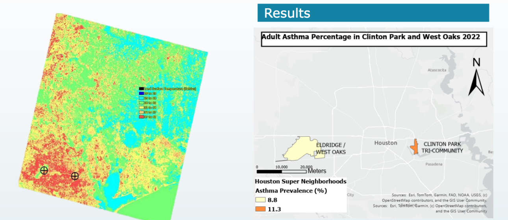

Environmental injustice refers to actions that harm the environment while simultaneously alienating specific groups and communities. Houston, one of the nation's most polluted cities, consistently places industrial sites alongside poor, working-class communities — creating immense health burdens for already underserved populations. This capstone project examines that burden directly, comparing two Houston neighborhoods with starkly different income levels and industrial exposure profiles.
The study compares Clinton Park Tri-Community (a proxy for Galena Park, median income ~$50,000) against Eldridge/West Oaks (median income ~$82,509). Clinton Park sits adjacent to more than 10 industrial facilities and records significantly higher air quality index (AQI) values, while Eldridge/West Oaks has only 2 nearby facilities and benefits from green space proximity.
Adult asthma prevalence values were obtained from the Houston State of Health dashboard at the Super Neighborhood scale. A CSV containing the two study areas and their respective prevalence values was joined to the Super Neighborhood polygon layer in ArcGIS Pro and clipped to the areas of interest. A graduated color ramp was applied to display relative differences in asthma prevalence between the two communities. Census tract-level data from CDC PLACES was initially considered but was set aside due to persistent field-formatting and join incompatibility issues.
This capstone project successfully links established environmental injustice to a quantifiable public health crisis. The 2.5 percentage point disparity in adult asthma rates confirms that historical pollution exposure in low-income areas is translating directly into preventable respiratory illness. These results necessitate immediate policy action, including stricter environmental controls and targeted health resource allocation to protect the most exposed residents of Houston.